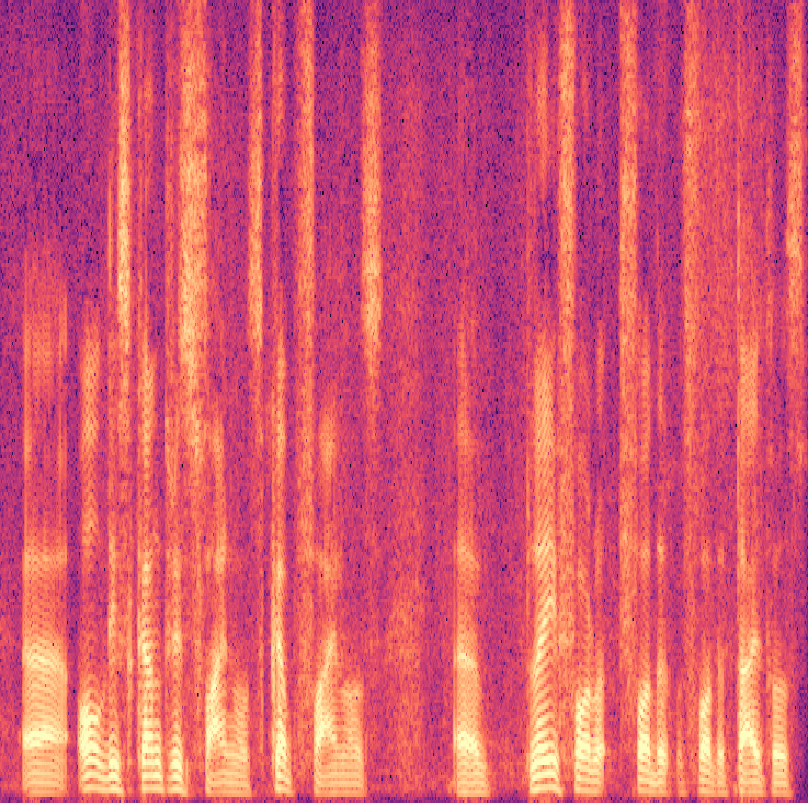
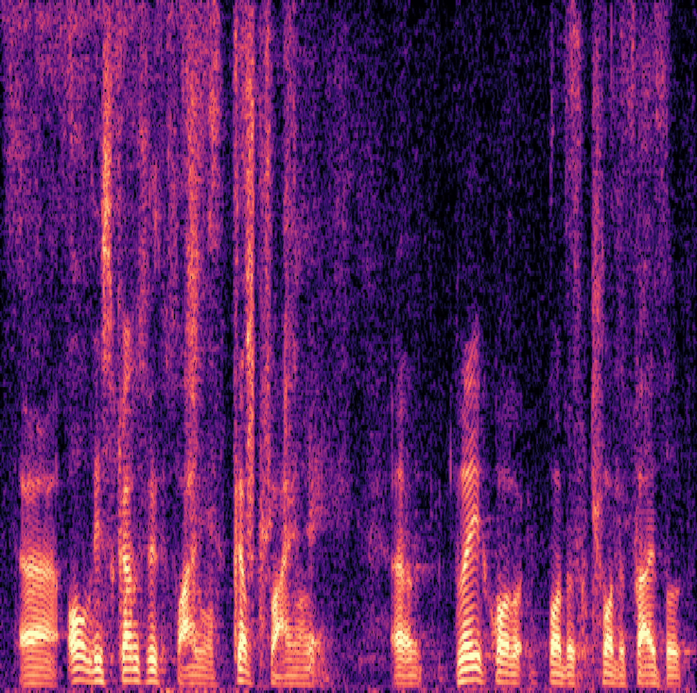

Demo Audio
Below audio samples are the comparison of enhanced outputs obtained by using the same input for the four models: FlowAVSE(ours), AVDiffuSS [1], and AV-Gen [2].It seems all audio is enhancing mix speech well. However, our model is good at denoising noises and detecting the target speech for whole time.
 |
||||
|  |  | |||